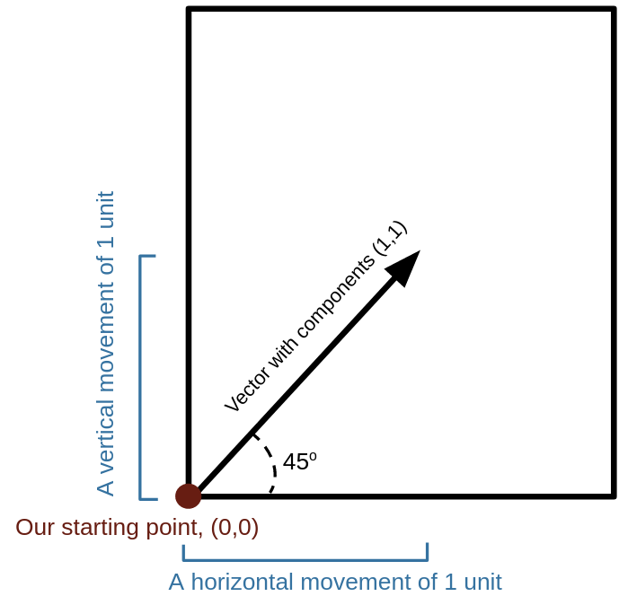

Section 1.5 Vectors and Vector Spaces
Subsection 1.5.1 Introduction to Vectors
A vector is an ordered list of numbers that is used to describe quantities with both magnitude and direction. One example of a vector is force, which has both a magnitude (how strong the force is) and a direction (the angle at which the force is being applied). Each vector has a dimension, which is the number of components that comprise it. It is customary to signify that something is a vector by either drawing an arrow on top of it or bolding it. If we have a vector called \(x\text{,}\) we would write \(\vec{x}\) or \(\boldsymbol{x}\text{.}\) The number \(x_{n}\) is called the \(n\)-th component of \(\vec{x}\text{.}\)
The most typical use of a vector with \(n\) components is to describe a point in \(n\) dimensional space in reference to some starting point. For example, if you have a square piece of paper and label the bottom left corner with the starting point (0,0), then a vector with components (1,1) would represent moving one unit of measurement along the bottom of the paper and one unit of measurement along the side of the paper to reach a new point. This vector would have a direction of \(45^{\circ}\) and a magnitude of \(\sqrt{2}\) units (by the pythagorean theorem).

Subsection 1.5.2 Vector Spaces
Every vector exists within a vector space, which are sets that satisfy certain mathematical properties. The most common vector spaces we will deal with are \(\mathbb{R}^n\text{,}\) the set of all \(n\) dimensional vectors with real components, and \(\mathbb{C}^n\text{,}\) the set of all \(n\) dimensional vectors with complex components. Notice \(\mathbb{R}^n \subseteq \mathbb{C}^n\text{,}\) so we will usually work with \(\mathbb{C}^n\) for generality. All vector spaces have the same properties regardless of dimension. Here are the properties for an \(n\)-dimensional vector space:
1. Vector equality: \(\vec{x}=\vec{y}\) means \(x_{i}=y_{i}, i \in n. \)
2. Vector addition: \(\vec{x}+\vec{y}=\vec{z}\) means \(x_{i}+y_{i}=z_{i}, i \in n. \)
3. Scalar multiplication: \(a \vec{x} \equiv \big(a x_{1}, a x_{2},..., a x_{n}\big). \)
4. Negative of a vector: \(-\vec{x}=(-1) \vec{x} \equiv \big(-x_{1},-x_{2},...,-x_{n}\big). \)
5. Null vector: There exists a null vector \(\vec{0} \equiv (0,0,...,0). \)
If our vector components are all real numbers (i.e. the vector space exists in \(\mathbb{R}^n\) instead of \(\mathbb{C}^n\)), then the following properties also hold:
1. Addition of vectors is commutative: \(\vec{x}+\vec{y}=\vec{y}+\vec{x}. \)
2. Addition of vectors is associative: \((\vec{x}+\vec{y})+\vec{z}=\vec{x}+(\vec{y}+\vec{z}). \)
3. Scalar multiplication is distributive: \(a(\vec{x}+\vec{y})=a \vec{x}+a \vec{y},\) and \((a+b) \vec{x}=a \vec{x}+b \vec{x}\)
4. Scalar multiplication is associative: \((a b) \vec{x}=a(b \vec{x}).\)
Subsection 1.5.3 Bases
For any vector space, one can find a subset of vectors which can be used to generate any other vector in the space through linear combinations (scalar multiplication and vector addition). The smallest set of vectors that fulfills this property is called the basis. In \(\mathbb{R}^{2}\text{,}\) we only need two vectors to produce the rest through linear combination. The standard basis, \(\mathcal{B},\) is:
\begin{equation*}
{\mathcal{B}}=\bigg\{ \{\widehat{\mathbf{x}}, \widehat{\mathbf{y}}\}= \begin{pmatrix} 1 \\ 0 \end{pmatrix}, \begin{pmatrix} 0 \\ 1 \end{pmatrix} \bigg\}
\end{equation*}
The ^ symbol is used to denote that a vector is normal, which means that it has a length of 1. The vector \(\widehat{x}\) is referred to as "\(x\) hat." This property is extremely important to quantum mechanics and will be discussed more later.
Bases have two properties:
Linear Independence: A set of vectors is linearly independent if we cannot express any one of them as a linear combination of the others. If we can express one as a linear combination of the others, then it is called a linearly dependent set. A basis must be linearly independent.
Completeness: A set of vectors is complete if it spans its vector space, which in turn means that any vector in the space can be expressed as a linear combination of the vectors in that set. A basis for a vector space must span the space.
Let \({\mathcal{B}}\) be the set,
\begin{equation*}
{\mathcal{B}} = \Bigg\{ \begin{pmatrix} 1\\ 0\\ 0\\ \end{pmatrix}, \begin{pmatrix} 0\\ 1\\ 0\\ \end{pmatrix} \Bigg\}
\end{equation*}
And let \(\vec{v}\) be the vector,
\begin{equation*}
\vec{v}= \begin{pmatrix} 2\\ -3\\ 1\\ \end{pmatrix}
\end{equation*}
Since we are unable to express \(\vec{v}\) as a linear combination of the elements of \(\mathcal{B}\text{,}\) then we say \({\mathcal{B}}\) is not complete.
Example 1.5.2.
Let \({\mathcal{B}}\) be the set,
\begin{equation*}
{\mathcal{B}} = \Bigg\{ \begin{pmatrix} 1\\ 0\\ \end{pmatrix}, \begin{pmatrix} 0\\ 1\\ \end{pmatrix} \Bigg\}
\end{equation*}
And let \(\vec{x}\) be the vector,
\begin{equation*}
\vec{x} = \begin{pmatrix} 5\\ -7\\ \end{pmatrix}
\end{equation*}
We can express \(\vec{x}\) as:
\begin{equation*}
\vec{x} = 5 \cdot \begin{pmatrix} 1\\ 0\\ \end{pmatrix} + (-7) \cdot \begin{pmatrix} 0\\ 1\\ \end{pmatrix} = \begin{pmatrix}5\\0\\ \end{pmatrix} + \begin{pmatrix}0\\ -7\\ \end{pmatrix} = \begin{pmatrix} 5\\ -7\\ \end{pmatrix}
\end{equation*}
Since we can express \(\vec{x}\) as a linear combination of the elements of \(\mathcal{B}\) and it is easy to show that we could construct any other vector in \(\mathbb{R}^2\) from these same elements, we say that \(\mathcal{B}\) spans \(\mathbb{R}^2\) and is complete.
Theorem 1.5.3.
Dimension of a basis. The number of basis elements for a vector space is the same as that spaces dimension.
Subsection 1.5.4 Linear Algebra
Linear algebra is the study of vectors and transformations. In this subsection we will describe some other pieces of linear algebra that will be important to quantum computation.
Vector Transpose: The transpose is an operation that turns a standard column vector into a row vector, or vice versa. This means an \(n\) dimensional vector changes from having \(n\) rows and \(1\) column to having \(1\) row and \(n\) columns. The transpose is represented with a superscript \(T\) and the operation is shown below.
\begin{equation*}
\begin{pmatrix} a_1 \\ a_2 \\ \vdots \\ a_n \end{pmatrix}^{T} = \begin{pmatrix} a_1 & a_2 & \ldots & a_n \end{pmatrix}
\end{equation*}
Dot Product / Inner Product: The dot product (more generally known as the inner product in the context of quantum computation) is an operation between two vectors of the same dimension that produces a scalar. This product is typically referred to with a \(\cdot\text{,}\) but has an alternate notation in quantum computation that we will see in the next section. In \(\mathbb{R}}\) and In \(\mathbb{C}^n\) this operation is performed by taking the sum of the products of the corresponding entries in each vector, as shown below.
\begin{equation*}
\begin{pmatrix} a_1 \\ a_2 \\ \vdots \\ a_n \end{pmatrix} \cdot \begin{pmatrix} b_1 \\ b_2 \\ \vdots \\ b_n \end{pmatrix} = a_1 \cdot b_1 + a_2 \cdot b_2 + \ldots + a_n \cdot b_n
\end{equation*}
Orthogonality: Orthogonality is the generalization of the concept of perpendicularity. In two and three dimensional space, two vectors are orthogonal if the angle between them is a right angle. Two vectors are orthogonal if their inner product is equal to \(0\text{.}\)
Normality: A vector is normal if it has a length of \(1\text{.}\) The length (sometimes also referred to as the norm) of a vector can be found be taking the square root of the sum of the squares of its entries, as shown below. A non-normal vector can be normalized by dividing each of its components by the vectors length. A set of vectors is orthonormal if each of the vectors are normal and each of the vectors are orthogonal to the rest.
\begin{equation*}
\text{Length} (\begin{pmatrix} a_1 \\ a_2 \\ \vdots \\ a_n \end{pmatrix}) = \sqrt{a_{1}^2 + a_{2}^2 + \ldots + a_{n}^2}
\end{equation*}
Matrices: Whereas a vector is a single column of elements, a matrix is a table of elements organized in rows and columns. Technically speaking, a vector can be thought of a matrix with only one column. The dimension of a matrix is described by first listing the number of rows and then listing the number of columns. Thus, a \(2 \times 3\) matrix (read "two by three") would have two rows and three columns. A square matrix is any matrix with the same number of rows and columns. One of the most important matrices is the identity matrix, a square matrixin which all of the entries along the diagonal are \(1\) and all other entries are \(0\text{.}\) Examples of the \(2\times2\) and \(5\times5\) identity matrices are shown below, which can be generalized to any \(n \times n\) matrix.
\begin{equation*}
I_{2\times2} = \begin{pmatrix} 1 & 0 \\ 0 & 1 \end{pmatrix}, I_{5\times5} = \begin{pmatrix} 1 & 0 & 0 & 0 & 0 \\ 0 & 1 & 0 & 0 & 0 \\ 0 & 0 & 1 & 0 & 0 \\ 0 & 0 & 0 & 1 & 0 \\ 0 & 0 & 0 & 0 & 1 \end{pmatrix}
\end{equation*}
A matrix can be multiplied by a scalar in the same way that a vector can, by multiplying each entry in the matrix by the scalar, as shown below.
\begin{equation*}
c \times \begin{pmatrix} a_1 & a_2 & a_3 \\ a_4 & a_5 & a_6 \\ a_7 & a_8 & a_9 \end{pmatrix} = \begin{pmatrix} c \times a_1 & c \times a_2 & c \times a_3 \\ c \times a_4 & c \times a_5 & c \times a_6 \\ c \times a_7 & c \times a_8 & c \times a_9 \end{pmatrix}
\end{equation*}
The concept of a transpose can be extended from vectors to matrices as well. A matrix’s transpose is found by turning each of its rows into a column, or, equivalently, by turning each of its columns into a row. This means the transpose of an \(m \times n\) matrix is an \(n \times m\) matrix. The matrix transpose is also represented by a superscript \(T\text{.}\) An example of transposing a \(3 \times 3\) matrix is shown below.
\begin{equation*}
\begin{pmatrix} a_1 & a_2 & a_3 \\ a_4 & a_5 & a_6 \\ a_7 & a_8 & a_9 \end{pmatrix} ^{T} = \begin{pmatrix} a_1 & a_4 & a_7 \\ a_2 & a_5 & a_8 \\ a_3 & a_6 & a_9 \end{pmatrix}
\end{equation*}
Matrix Addition: Two matrices can be added together only if they each have the same number of rows and columns. The sum of two matrices is found by adding together the corresponding entries of each matrix, as shown below with an example of two \(3\times3\) matrices.
\begin{equation*}
\begin{pmatrix} a_1 & a_2 & a_3 \\ a_4 & a_5 & a_6 \\ a_7 & a_8 & a_9 \end{pmatrix} + \begin{pmatrix} b_1 & b_2 & b_3 \\ b_4 & b_5 & b_6 \\ b_7 & b_8 & b_9 \end{pmatrix} = \begin{pmatrix} a_1 + b_1 & a_2 + b_2 & a_3 + b_3 \\ a_4 + b_4 & a_5 + b_5 & a_6 + b_6 \\ a_7 + b_7 & a_8 + b_8 & a_9 + b_9 \end{pmatrix}
\end{equation*}
Checkpoint 1.5.4.
Compute the following sum:
\begin{equation*}
\begin{pmatrix} 4 & 7 & 9 \\ 1 & 0 & 6 \\ 2 & 5 & 3 \end{pmatrix} + \begin{pmatrix} 0 & 4 & 6 \\ 2 & 2 & 2 \\ 5 & 3 & 8 \end{pmatrix}
\end{equation*}
Solution.
\begin{equation*}
= \begin{pmatrix} 4 & 11 & 15 \\ 3 & 2 & 8 \\ 7 & 8 & 11 \end{pmatrix}
\end{equation*}
Matrix Multiplication: Two matrices can be multiplied together only if the number of columns of the left matrix is equal to the number of rows of the right matrix. The resulting product will be a matrix with the same number of rows as the left matrix and the same number of columns as the right. Thus an \(m /times n\) matrix multiplied by a \(n \times q\) matrix would produce an \(m \times q\) matrix. Notably, matrix multiplication is non-commutative, which means for two matrices \(A\) and \(B\text{,}\) \(AB \neq BA\text{.}\) The entries of a product matrix are determined by taking the dot product between the corresponding row of the left matrix and the corresponding column of the right matrix, as shown below with an example of multiplication between a \(3\times3\) and a \(3\times2\) matrix.
\begin{equation*}
\begin{pmatrix} a_1 & a_2 & a_3 \\ a_4 & a_5 & a_6 \\ a_7 & a_8 & a_9 \end{pmatrix} \times \begin{pmatrix} b_1 & b_2 \\ b_3 & b_4 \\ b_5 & b_6 \end{pmatrix} = \begin{pmatrix} a_1b_1 + a_2b_3+a_3b_5 & a_1b_2 + a_2b_4 + a_3b_6 \\ a_4b_1 + a_5b_3 + a_6b_5 & a_4b_2 + a_5b_4 + a_6b_6 \\ a_7b_1 + a_8b_3 + a_9b_5 & a_7b_2 + a_8b_4 + a_9b_6 \end{pmatrix}
\end{equation*}
Now that we know matrix multiplication, we can redefine the dot product / inner product as the transpose of a vector multiplied by the original vector. Since vectors are \(n \times 1\) dimensional, the transpose will be \(1 \times n\) dimensional, so multiplying the transpose on the left and the original on the right will produce a \(1 \times 1\) matrix, which is functionally the same as a scalar.
Checkpoint 1.5.5.
Compute the following product:
\begin{equation*}
\begin{pmatrix} 2 & 4 \\ 3 & 0 \end{pmatrix} \times \begin{pmatrix} 5 & 1 & 2 \\ 0 & 7 & 2 \end{pmatrix}
\end{equation*}
Hint.
Solution.
The resulting matrix should be \(2 \times 3\)
\begin{equation*}
= \begin{pmatrix} 2 \times 5 + 4 \times 0 & 2 \times 1 + 4 \times 7 & 2 \times 2 + 4 \times 2 \\ 3 \times 5 + 0 \times 0 & 3 \times 1 + 0 \times 7 & 3 \times 2 + 0 \times 2 \end{pmatrix} = \begin{pmatrix} 10 & 30 & 12 \\ 15 & 3 & 6 \end{pmatrix}
\end{equation*}